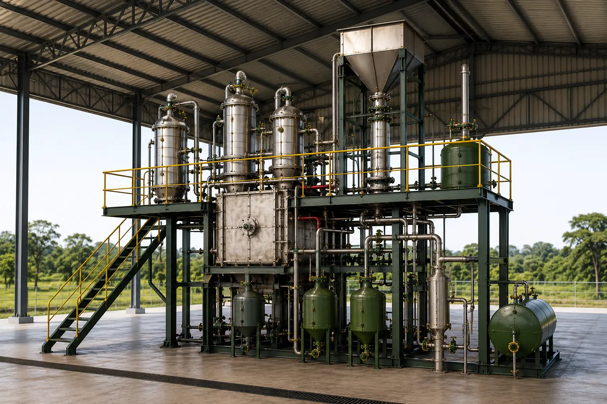
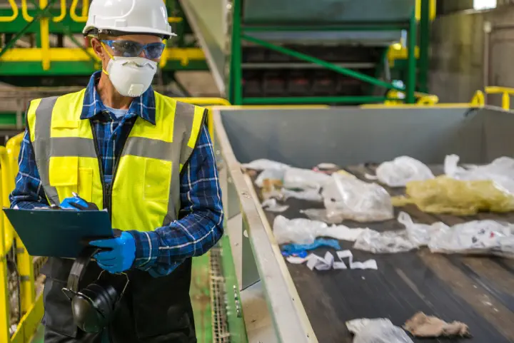
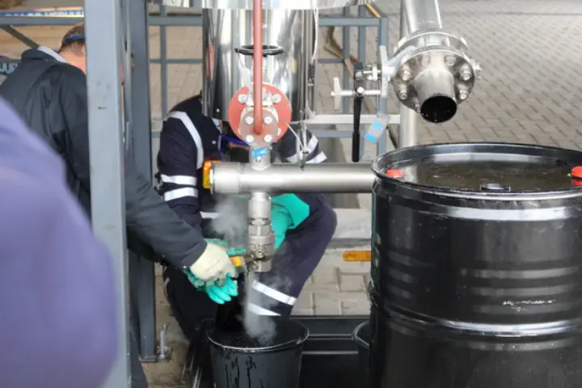
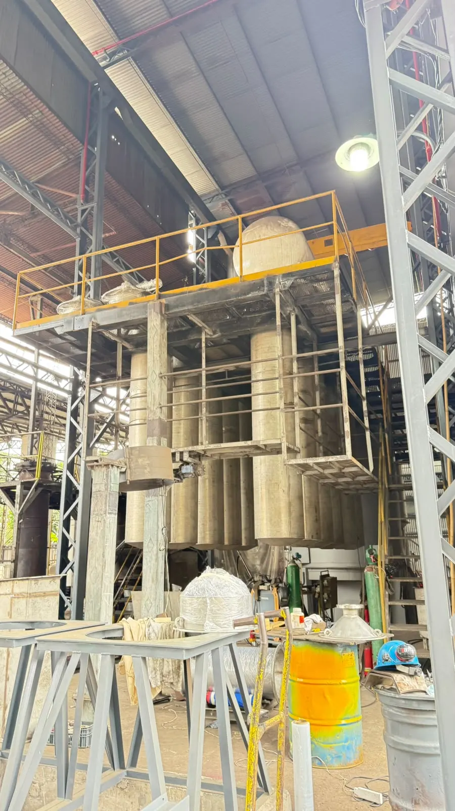
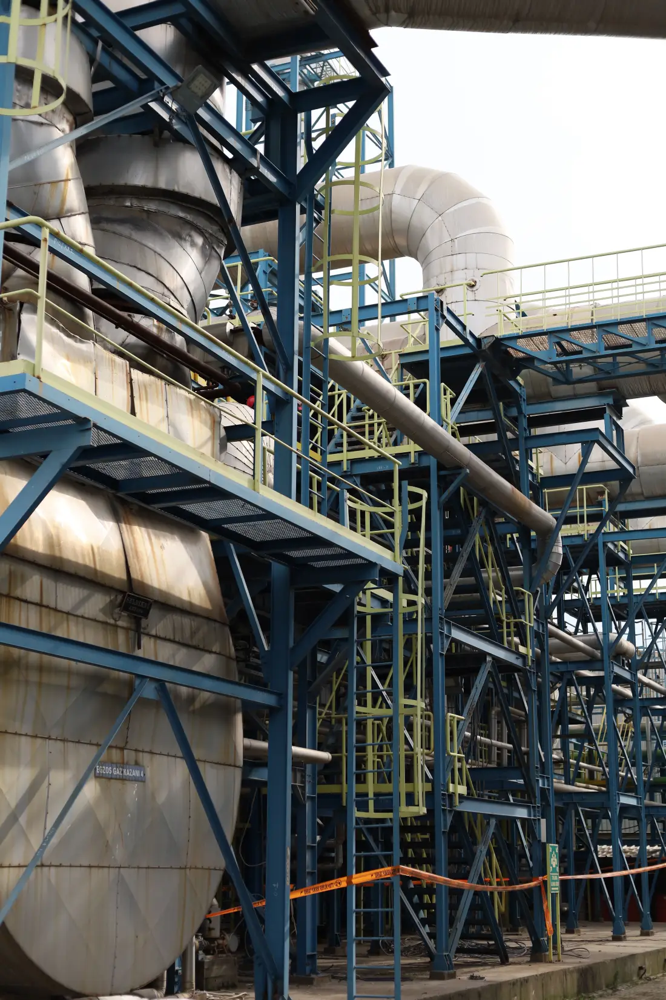
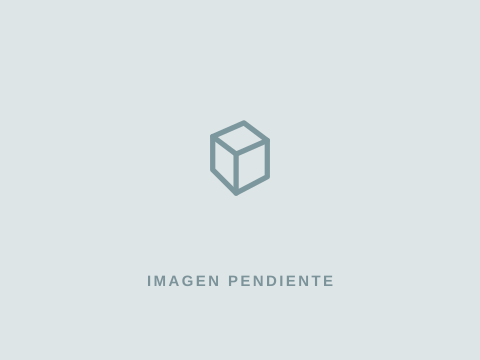
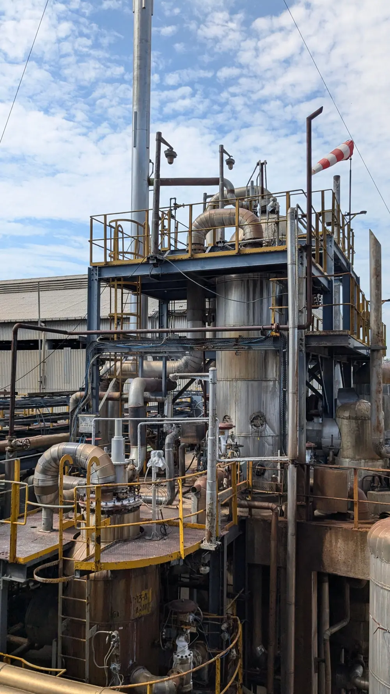

Gestión de residuos industriales · Paraguay
Transformamos residuos en nueva materia prima.
Convertimos residuos en nuevas materias primas mediante una tecnología patentada -única en Paraguay-, trazable y sin emisiones contaminantes, impulsando una industria nacional más circular, competitiva y sostenible.
Empresas que ya transforman sus residuos con Enerpy
El problema
La gestión de un residuo no termina cuando sale de su empresa.
Una gestión responsable también implica conocer cómo será tratado, cuál será su destino y qué documentación respalda el proceso. Cuando esa trazabilidad no existe, aumentan la incertidumbre y los riesgos ambientales, operativos y reputacionales para la organización.
-
Destino
Saber qué ocurre finalmente con el residuo.
-
Trazabilidad
Poder seguir y documentar su gestión.
-
Control
Reducir la incertidumbre sobre el tratamiento realizado.
-
Respaldo
Contar con evidencia documental del proceso.
La transformación Enerpy
Del residuo a una nueva materia prima.



RMO®
Una tecnología única en Paraguay que transforma residuos en materia prima.
-
Tecnología patentada.
-
No es incineración.
-
No contamina aire ni agua.
-
Reconstruye materiales como materia prima secundaria.
-
Cumple con las normativas paraguayas.

Tecnología
RMO® — Reactor de Materia Orgánica
Es la tecnología utilizada por Enerpy para el tratamiento de residuos compatibles, permitiendo su reconversión y potencial valorización bajo un enfoque técnico y de economía circular.
- Por qué es diferente
- Se enmarca en la química sostenible y la química ambiental, orientada a reducir la dependencia de materias primas de origen fósil.
- Origen y desarrollo
- Tecnología propia registrada, originada en Paraguay y posteriormente desarrollada también en Europa.
- Resultados posibles
- Reconversión del residuo y recuperación de materiales o materias primas secundarias con potencial de aprovechamiento.
Los resultados dependen del tipo, composición y volumen de cada residuo, y están siempre sujetos a una evaluación técnica previa.
Residuos que se transforman
Residuos sujetos a evaluación.
-
RAEE
Residuos de aparatos eléctricos y electrónicos: impresoras, toners y cartuchos.
-
NFU
Neumáticos fuera de uso, retirados del servicio y sin posibilidad de reutilización.
-
Aceites usados
Aceites lubricantes e industriales que ya cumplieron su vida útil.
-

Tintas y pinturas
Remanentes y residuos de procesos de impresión, recubrimiento y pintado.
-
Envases contaminados
Envases que estuvieron en contacto con sustancias peligrosas o químicas.
-
Agroindustriales
Residuos generados en procesos de producción y transformación agroindustrial.
-
Otros residuos especiales
Otros residuos sujetos a análisis, evaluados caso por caso según sus características.
-
¿Su residuo no está en la lista?
La admisión depende de las características de cada residuo y de la evaluación técnica correspondiente.
Consultar su caso
Beneficios
Qué gana su empresa.
- 01
Mayor control sobre la gestión de residuos
- 02
Trazabilidad del proceso
- 03
Respaldo documental
- 04
Reducción de incertidumbre ambiental y operativa
- 05
Potencial de valorización del residuo
- 06
Aporte a estrategias de economía circular
Casos reales
Casos reales y testimonios.
Empresas que ya gestionan sus residuos con Enerpy, con evaluación técnica previa y respaldo documental de cada proceso.
-
- Toneladas gestionadas
- 1.200
- Años trabajando con Enerpy
- 8
Gestión final de residuos industriales con evaluación técnica previa y trazabilidad documental del proceso.
-
- Toneladas gestionadas
- 850
- Años trabajando con Enerpy
- 5
Residuos químicos caracterizados y evaluados según compatibilidad antes de definir su alternativa de tratamiento.
-
- Toneladas gestionadas
- 640
- Años trabajando con Enerpy
- 6
Gestión de aceites usados y envases contaminados con respaldo documental para control interno y fiscalización.
Cifras de referencia con fines de maquetación. Los datos definitivos de cada caso serán confirmados y validados con cada empresa antes de su publicación.
Testimonios
Lo que resuelven quienes ya trabajan con Enerpy.
-
Resolver la acumulación de residuos
Llegamos a tener materiales ocupando un sector completo de la planta porque no encontrábamos una salida adecuada. Con la evaluación de Enerpy pudimos ordenar lo acumulado, definir qué tratamiento correspondía y liberar ese espacio sin perder el control sobre el destino de los residuos.
-
Retiro coordinado desde almacenes
Para nosotros, lo importante era que el retiro se ajustara a nuestras ventanas operativas. Coordinamos fechas, volúmenes y acceso a los depósitos, y el equipo realizó la recolección sin frenar despachos ni interferir con el movimiento del almacén. Fue un proceso práctico y bien organizado.
-
Gestión de residuos peligrosos
No podíamos tratar todos los residuos bajo un mismo criterio. Primero necesitábamos caracterizarlos, evaluar su compatibilidad y reducir los riesgos asociados a su manipulación. La intervención de Enerpy nos dio una alternativa técnica para transformar materiales peligrosos que no admitían una gestión convencional.
-
Certificación del proceso
Si la gestión no termina en un certificado, para nosotros el proceso queda incompleto. Enerpy nos entrega el respaldo de lo gestionado, lo que nos permite cerrar cada operación con evidencia y reportarla correctamente dentro de nuestro sistema de gestión ambiental.
-
Preparación para auditorías
En una auditoría no alcanza con decir que los residuos fueron retirados: hay que demostrar qué se hizo, cuándo se hizo y cómo terminó el proceso. Ahora tenemos el respaldo documental organizado y disponible cuando el auditor solicita evidencias. Eso nos evita reconstruir la información a último momento.
-
Respuesta ante instituciones
Cuando recibimos un requerimiento de una institución, necesitamos responder con documentos, no con explicaciones informales. La trazabilidad y las certificaciones de Enerpy nos dan una base concreta para sustentar nuestra gestión ante fiscalizaciones y otros procesos de control.

Sobre Enerpy
Tecnología ambiental única en Paraguay
Enerpy Ambiental S.A. es una empresa paraguaya de tecnología ambiental que aplica la tecnología RMO® para la gestión y transformación de residuos. Esta tecnología, originada en Paraguay y posteriormente desarrollada también en Europa, busca recuperar materiales y materias primas aprovechables a partir de residuos, contribuyendo a modelos de economía circular y gestión ambiental responsable.
Preguntas frecuentes
Dudas habituales sobre la gestión de residuos.
¿Qué tipo de residuos puede gestionar Enerpy Ambiental?
Enerpy evalúa residuos como RAEE, neumáticos fuera de uso, aceites usados, tintas y pinturas, envases contaminados y residuos agroindustriales. Cada caso requiere una evaluación técnica previa para determinar la alternativa de gestión adecuada.
¿Cómo comienza el proceso de gestión de residuos?
El proceso inicia con un diagnóstico técnico del residuo, considerando su origen, composición, características y volumen. A partir de esta evaluación se define la alternativa de tratamiento y gestión correspondiente.
¿Qué es la tecnología RMO®?
El RMO® —Reactor de Materia Orgánica— es la tecnología utilizada por Enerpy para el tratamiento de residuos compatibles, permitiendo su reconversión y potencial valorización bajo un enfoque técnico y de economía circular.
¿Qué respaldo recibe la empresa sobre la gestión realizada?
Enerpy incorpora trazabilidad documental durante el proceso de gestión, generando respaldo sobre el tratamiento y destino del residuo, lo que puede contribuir al control interno y a procesos de auditoría o fiscalización.
¿Todos los residuos pueden ser tratados por Enerpy?
No. Cada residuo debe ser evaluado previamente para determinar su compatibilidad, condiciones de tratamiento y alcance de gestión. La admisión depende de sus características y de la evaluación técnica correspondiente.
Ubicación
Capiatá, Departamento Central, Paraguay.
Enerpy Ambiental ofrece soluciones de gestión final de residuos para empresas en todo el Paraguay.
Ver en Google Maps- WhatsApp +595 985 121470
- Email comercial@enerpyambiental.com.py
- Redes
¿Necesita evaluar la gestión final de un residuo?
Cada residuo se evalúa según su tipo, composición, volumen y condiciones de gestión. El primer paso es una evaluación técnica.